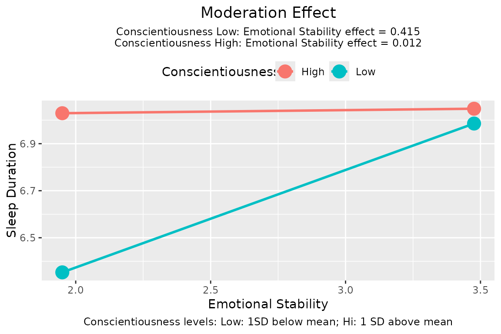
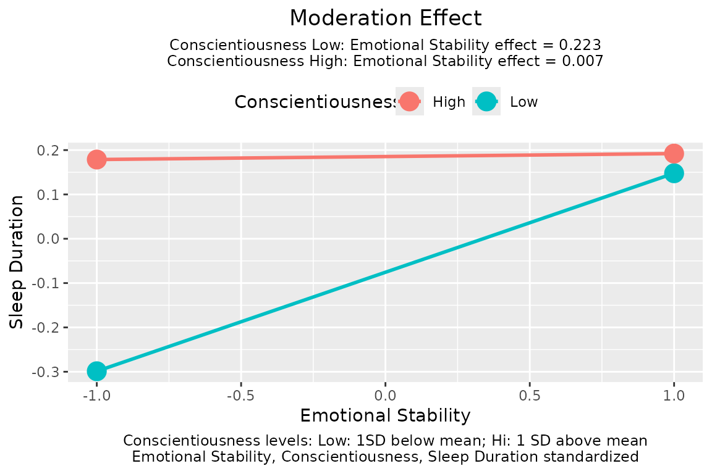

Plot the moderation effect in a regression model
plotmod(
output,
x,
w,
x_label,
w_label,
y_label,
title,
digits = 3,
x_from_mean_in_sd = 1,
w_from_mean_in_sd = 1,
w_method = c("sd", "percentile"),
w_percentiles = c(0.16, 0.84),
x_method = c("sd", "percentile"),
x_percentiles = c(0.16, 0.84),
w_sd_to_percentiles = NA,
x_sd_to_percentiles = NA,
note_standardized = TRUE,
no_title = FALSE,
line_width = 1,
point_size = 5,
graph_type = c("default", "tumble")
)Arguments
- output
The output of
stats::lm(),std_selected(), orstd_selected_boot().- x
The name of the focal variable (x-axis) in `output``. It can be the name of the variable, with or without quotes. Currently only numeric variables are supported.
- w
The name of the moderator in
output. It can be the name of the variable, with or without quotes.- x_label
The label for the X-axis. Default is the value of
x.- w_label
The label for the legend for the lines. Default is the value of
w.- y_label
The label for the Y-axis. Default is the name of the response variable in the model.
- title
The title of the graph. If not supplied, it will be generated from the variable names or labels (in
x_label,y_label, andw_label). If"", no title will be printed. This can be used when the plot is for manuscript submission and figures are required to have no titles.- digits
Number of decimal places to print. Default is 3.
- x_from_mean_in_sd
How many SD from mean is used to define "low" and "high" for the focal variable. Default is 1.
- w_from_mean_in_sd
How many SD from mean is used to define "low" and "high" for the moderator. Default is 1. Ignored if
wis categorical.- w_method
How to define "high" and "low" for the moderator levels. Default is in terms of the standard deviation of the moderator,
"sd". If equal to"percentile", then the percentiles of the moderator in the dataset are used. Ignored ifwis categorical.- w_percentiles
If
w_methodis"percentile", then this argument specifies the two percentiles to be used, divided by 100. It must be a vector of two numbers. The default isc(.16, .84), the 16th and 84th percentiles, which corresponds approximately to one SD below and above mean for a normal distribution, respectively. Ignored ifwis categorical.- x_method
How to define "high" and "low" for the focal variable levels. Default is in terms of the standard deviation of the focal variable,
"sd". If equal to"percentile", then the percentiles of the focal variable in the dataset is used.- x_percentiles
If
x_methodis"percentile", then this argument specifies the two percentiles to be used, divided by 100. It must be a vector of two numbers. The default isc(.16, .84), the 16th and 84th percentiles, which corresponds approximately to one SD below and above mean for a normal distribution, respectively.- w_sd_to_percentiles
If
w_methodis"percentile"and this argument is set to a number, this number will be used to determine the percentiles to be used. The lower percentile is the percentile in a normal distribution that isw_sd_to_percentilesSD below the mean. The upper percentile is the percentile in a normal distribution that isw_sd_to_percentilesSD above the mean. Therefore, ifw_sd_to_percentilesis set to 1, then the lower and upper percentiles are 16th and 84th, respectively. Default isNA.- x_sd_to_percentiles
If
x_methodis"percentile"and this argument is set to a number, this number will be used to determine the percentiles to be used. The lower percentile is the percentile in a normal distribution that isx_sd_to_percentilesSD below the mean. The upper percentile is the percentile in a normal distribution that isx_sd_to_percentilesSD above the mean. Therefore, ifx_sd_to_percentilesis set to 1, then the lower and upper percentiles are 16th and 84th, respectively. Default isNA.- note_standardized
If
TRUE, will check whether a variable has SD nearly equal to one. If yes, will report this in the plot. Default isTRUE.- no_title
If
TRUE, title will be suppressed. Default isFALSE.- line_width
The width of the lines as used in
ggplot2::geom_segment(). Default is 1.- point_size
The size of the points as used in
ggplot2::geom_point(). Default is 5.- graph_type
If
"default", the typical line-graph with equal end-points will be plotted. If"tubmle", then the tumble graph proposed by Bodner (2016) will be plotted. Default is"default".
Value
A ggplot2 graph. Plotted if not assigned to a name. It can be further modified like a usual ggplot2 graph.
Details
This function generate a basic ggplot2 graph typically found in psychology manuscripts. It tries to check whether one or more variables are standardized, and report this in the plot if required.
This function only has features for typical plots of moderation effects. It is not intended to be a flexible tool for a fine control on the plots.
References
Bodner, T. E. (2016). Tumble graphs: Avoiding misleading end point extrapolation when graphing interactions from a moderated multiple regression analysis. Journal of Educational and Behavioral Statistics, 41(6), 593-604. doi:10.3102/1076998616657080
Examples
# Do a moderated regression by lm
lm_out <- lm(sleep_duration ~ age + gender + emotional_stability*conscientiousness, sleep_emo_con)
plotmod(lm_out,
x = emotional_stability,
w = conscientiousness,
x_label = "Emotional Stability",
w_label = "Conscientiousness",
y_label = "Sleep Duration")

# Standardize all variables except for categorical variables
lm_std <- std_selected(lm_out,
to_scale = ~ .,
to_center = ~ .)
plotmod(lm_std,
x = emotional_stability,
w = conscientiousness,
x_label = "Emotional Stability",
w_label = "Conscientiousness",
y_label = "Sleep Duration")

# Tumble Graph
plotmod(lm_std,
x = emotional_stability,
w = conscientiousness,
x_label = "Emotional Stability",
w_label = "Conscientiousness",
y_label = "Sleep Duration",
graph_type = "tumble")